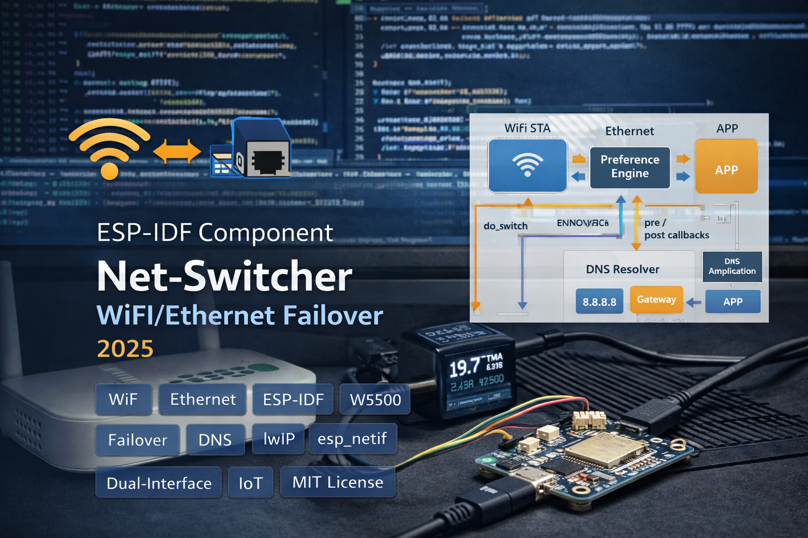

WiFi/Ethernet network switcher for ESP-IDF with preference-based routing, automatic failover, 3-tier DNS resolution, pre/post switch callbacks, and DHCP management. 18-function API for dual-interface IoT devices that need zero-downtime connectivity.

The core of Net-Switcher is a preference-based routing decision in net_switcher_update(). You set a preferred interface (Ethernet or WiFi), and the switcher always routes through it when available - falling back to the other interface only when the preferred one drops. When the preferred link comes back, it switches back automatically. The user wires this into their WiFi/IP event handlers by calling net_switcher_setWiFiConnected() or net_switcher_setEthernetConnected() then net_switcher_update() - keeping the component event-agnostic so it works with any network stack setup.
The switching decision is deterministic: preferred + available = use it; preferred + unavailable = failover; neither available = do nothing. net_switcher_switchTo() provides a manual override that bypasses the preference logic entirely for cases where the application needs direct control.
Network switches break DNS if the new interface has different name servers. The internal push_dns_to_lwip() function handles this with a 3-tier fallback: first, it reads ESP_NETIF_DNS_MAIN and ESP_NETIF_DNS_BACKUP from the target interface and pushes them to lwIP via dns_setserver(). If neither is valid, it falls back to the gateway IP (most routers forward DNS) with Google's 8.8.4.4 as backup. As a last resort, it uses 8.8.8.8 / 8.8.4.4. After every DNS change, dns_clear_cache() flushes stale entries so the first request on the new interface resolves correctly.
The actual switch (do_switch()) follows a strict sequence: fire the pre-switch callback (so the app can disconnect MQTT, WebSocket, or other services), stop DHCP on the inactive interface via esp_netif_dhcpc_stop(), set the new default netif, push DNS servers, update internal state, then fire the post-switch callback (so the app can reconnect). If the target is already the active interface, it just refreshes the default netif and DNS without triggering callbacks - preventing unnecessary reconnection churn.
The component deliberately does not subscribe to ESP-IDF events internally. Instead, it exposes setWiFiConnected() / setEthernetConnected() and expects the application to call them from its own event handlers. This keeps the component decoupled from any specific WiFi or Ethernet driver setup. All state is runtime-configured through the 18-function API - there's no Kconfig, no compile-time settings. Dependencies are limited to three core ESP-IDF components: esp_netif, lwip, and esp_event.